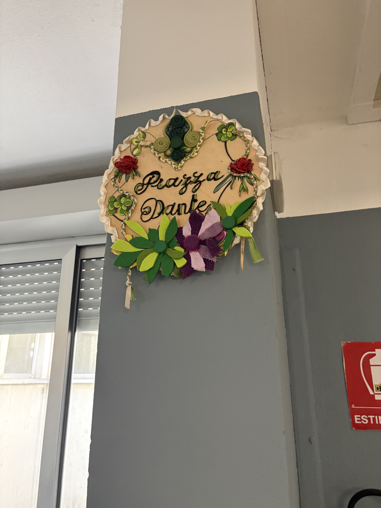

Piazza Dante
Chronicon del Progetto Artistico Scolastico

L'Angolo della Meraviglia

In un angolo della nostra scuola è nato uno spazio speciale dove gli studenti possono ammirare i ritratti del Sommo Poeta e della luminosa Beatrice. Piazza Dante è nata da un progetto guidato dal prof. Miglionico, trasformando materiali di scarto in pura bellezza.
Il Ritratto del Poeta

Dante Alighieri (1265-1321) è qui rappresentato con uno sguardo che invita alla riflessione. L'opera non è fatta di colori comuni, ma di vita riciclata.
Beatrice e la Luce

Beatrice, simbolo di purezza e guida spirituale, appare circondata da una luce policroma. La tecnica del mosaico con materiali plastici e metallici dona al volto una luminosità unica, quasi divina.
Riflessione sull'Ignavia

Questa spirale di materiali diversi richiama il movimento delle anime e la confusione di chi non sceglie. Dante condanna chi non prende posizione: oggi l'ignavia è l'indifferenza e la passività digitale.